The four names the price the peers imply, before → after · prices of 5 Oct, the same figures on every side
| company | before (C5b) | C6 · with outliers | C6 · without outliers | outliers · marked in | peers left in |
|---|---|---|---|---|---|
| MU today $1,064 | $4,497 4 single cells dropped | $4,456 | $6,194 | SNDK 3 of 16 columns NVDA 3 of 16 columns | 10 of 12 |
| NVDA today $240 | $391 5 single cells dropped | $394 | $386 | ARM 4 of 16 columns | 11 of 12 |
| CRWV today $87.80 | $140 0 single cells dropped | $140 | $77.97 | NBIS 5 of 12 columns WULF 4 of 10 columns APLD 4 of 10 columns HUT 2 of 4 columns | 8 of 12 |
| CBRS today $183 | $46.20 1 single cells dropped | $46.20 | $40.17 | CRDO 3 of 16 columns ALAB 3 of 16 columns | 10 of 12 |
MU SanDisk and Nvidia leave — on growth, not on their multiples
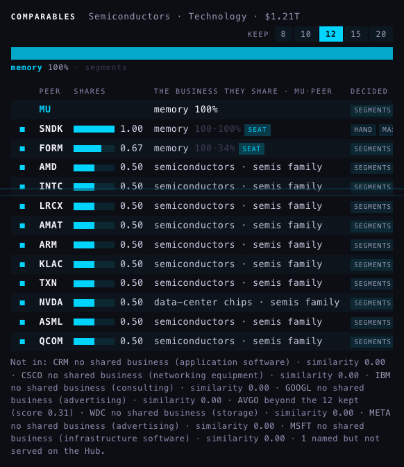

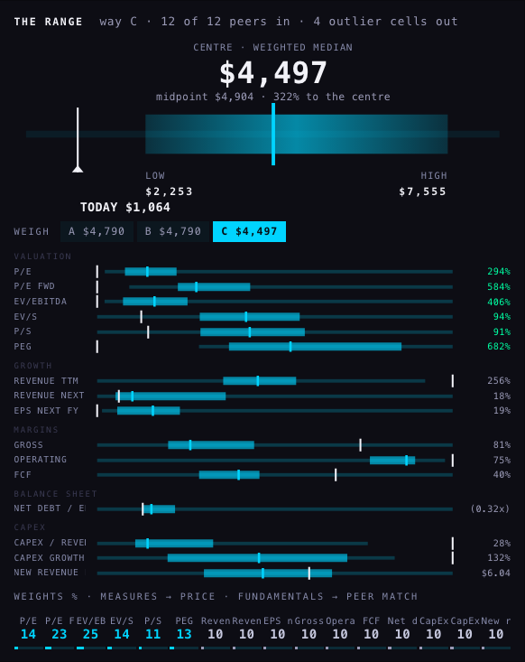

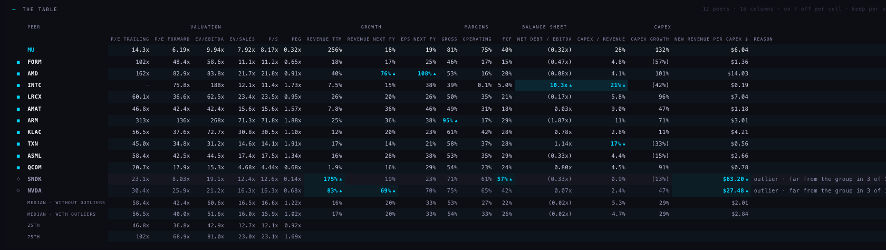
| MU · peers' median | before (C5b) | with outliers | without outliers | MU's price at that median: before → with → without |
|---|---|---|---|---|
| P/E | 56.5× 11 peers | 56.5× 11 | 58.4× 9 | $4,193 → $4,193 → $4,334 |
| P/E forward | 42.4× 11 peers | 40.0× 12 | 42.4× 10 | $7,284 → $6,875 → $7,292 |
| EV/EBITDA | 51.6× 12 peers | 51.6× 12 | 60.6× 10 | $5,387 → $5,387 → $6,320 |
| EV/sales | 15.6× 11 peers | 16.0× 12 | 16.5× 10 | $2,068 → $2,114 → $2,184 |
| P/S | 15.6× 11 peers | 15.9× 12 | 16.6× 10 | $2,034 → $2,077 → $2,159 |
| PEG | 1.1× 11 peers | 1.0× 12 | 1.2× 10 | $8,323 → $7,746 → $9,235 |
| THE CENTRE (way C) | $4,497 | $4,456 | $6,194 | low $3,244 · high $8,724 without outliers |
| MU's peer | verdict | the columns that marked it |
|---|---|---|
| SNDK | OUTLIER far from the group in 3 of 16 columns | New revenue per CapEx $ $63.20 (group $2.84, 18.8 spreads above) Revenue TTM 175% (group 17%, 11.7 spreads above) FCF 57% (group 26%, 4.3 spreads above) |
| NVDA | OUTLIER far from the group in 3 of 16 columns | New revenue per CapEx $ $27.48 (group $2.84, 7.7 spreads above) Revenue next FY 69% (group 20%, 6.2 spreads above) Revenue TTM 83% (group 17%, 4.9 spreads above) |
| AMD | marked, still counted far from the group in 2 of 16 columns | Revenue next FY 76% (group 20%, 7.0 spreads above) EPS next FY 108% (group 33%, 5.3 spreads above) |
| INTC | marked, still counted far from the group in 2 of 15 columns | Net debt / EBITDA 10.3× (group -0.0×, 18.4 spreads above) CapEx / revenue 21% (group 5%, 5.4 spreads above) |
| ARM | marked, still counted far from the group in 1 of 16 columns | Gross 95% (group 54%, 4.6 spreads above) |
| TXN | marked, still counted far from the group in 1 of 16 columns | CapEx / revenue 17% (group 5%, 4.0 spreads above) |
NVDA Arm leaves: 313× earnings, 71× sales, 95% gross margin
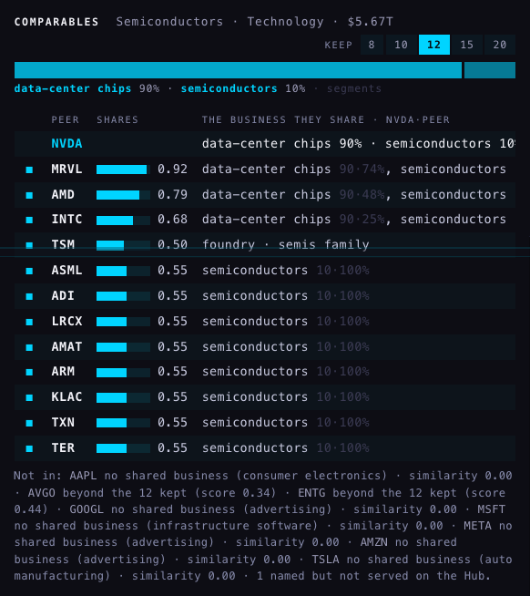

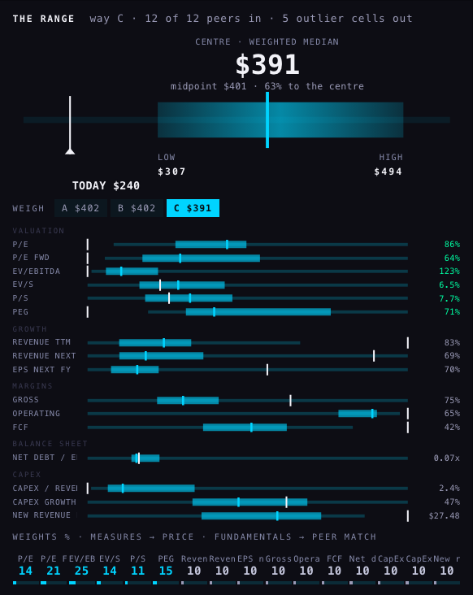

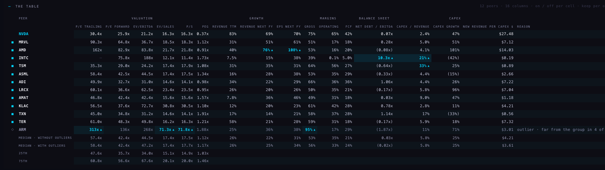
| NVDA · peers' median | before (C5b) | with outliers | without outliers | NVDA's price at that median: before → with → without |
|---|---|---|---|---|
| P/E | 56.5× 9 peers | 58.4× 11 | 57.5× 10 | $447 → $462 → $454 |
| P/E forward | 42.4× 11 peers | 42.4× 12 | 42.4× 11 | $393 → $394 → $393 |
| EV/EBITDA | 47.1× 12 peers | 47.1× 12 | 44.5× 11 | $536 → $536 → $506 |
| EV/sales | 17.4× 11 peers | 17.4× 12 | 17.4× 11 | $256 → $256 → $256 |
| P/S | 17.5× 11 peers | 17.7× 12 | 17.5× 11 | $259 → $261 → $259 |
| PEG | 1.2× 12 peers | 1.2× 12 | 1.1× 11 | $412 → $412 → $395 |
| THE CENTRE (way C) | $391 | $394 | $386 | low $303 · high $482 without outliers |
| NVDA's peer | verdict | the columns that marked it |
|---|---|---|
| ARM | OUTLIER far from the group in 4 of 16 columns | EV/S 71.3× (group 17.4×, 5.4 spreads above) P/E 313× (group 58.4×, 5.1 spreads above) Gross 95% (group 56%, 4.9 spreads above) P/S 71.8× (group 17.7×, 4.3 spreads above) |
| AMD | marked, still counted far from the group in 2 of 16 columns | EPS next FY 108% (group 34%, 6.5 spreads above) Revenue next FY 76% (group 25%, 3.5 spreads above) |
| INTC | marked, still counted far from the group in 2 of 15 columns | Net debt / EBITDA 10.3× (group -0.0×, 15.0 spreads above) CapEx / revenue 21% (group 6%, 4.3 spreads above) |
| TSM | marked, still counted far from the group in 1 of 16 columns | CapEx / revenue 33% (group 6%, 7.7 spreads above) |
CRWV the rule removes the four names most like CoreWeave
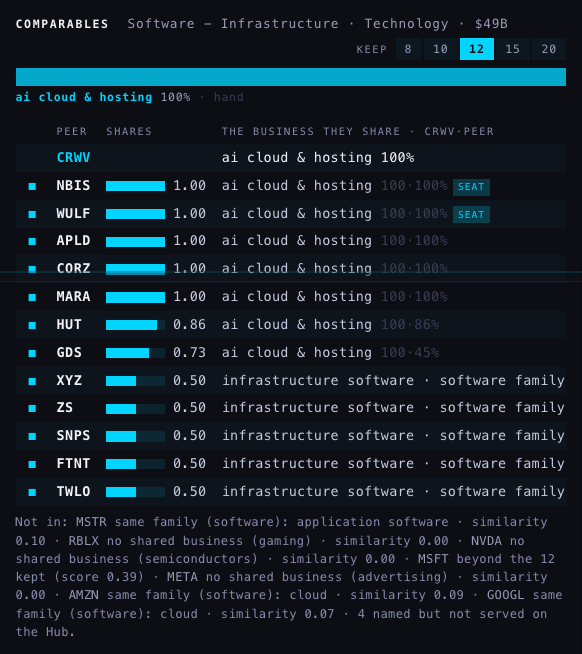

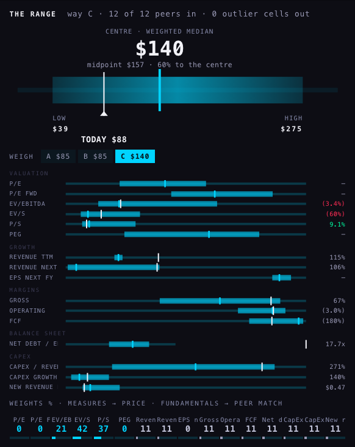

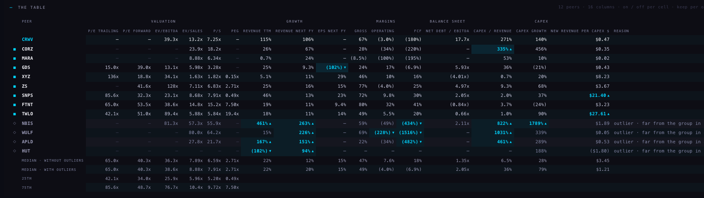
| CRWV · peers' median | before (C5b) | with outliers | without outliers | CRWV's price at that median: before → with → without |
|---|---|---|---|---|
| P/E | 65.0× 5 peers | 65.0× 5 | 65.0× 5 | CRWV cannot be priced on this row |
| P/E forward | 40.3× 6 peers | 40.3× 6 | 40.3× 6 | CRWV cannot be priced on this row |
| EV/EBITDA | 38.6× 7 peers | 38.6× 7 | 36.3× 6 | $84.77 → $84.77 → $75.66 |
| EV/sales | 8.9× 11 peers | 8.9× 11 | 7.9× 8 | $35.43 → $35.43 → $23.46 |
| P/S | 7.9× 11 peers | 7.9× 11 | 6.6× 8 | $95.78 → $95.78 → $79.77 |
| PEG | 2.7× 5 peers | 2.7× 5 | 2.7× 5 | CRWV cannot be priced on this row |
| THE CENTRE (way C) | $140 | $140 | $77.97 | low $33.03 · high $198 without outliers |
| CRWV's peer | verdict | the columns that marked it |
|---|---|---|
| NBIS | OUTLIER far from the group in 5 of 12 columns | Revenue TTM 461% (group 22%, 24.8 spreads above) Revenue next FY 263% (group 20%, 16.2 spreads above) CapEx / revenue 822% (group 36%, 15.1 spreads above) CapEx growth 1789% (group 79%, 11.3 spreads above) FCF -434% (group -7%, 6.0 spreads below) |
| WULF | OUTLIER far from the group in 4 of 10 columns | FCF -1516% (group -7%, 21.1 spreads below) CapEx / revenue 1031% (group 36%, 19.1 spreads above) Revenue next FY 226% (group 20%, 13.8 spreads above) Operating -228% (group -4%, 5.1 spreads below) |
| APLD | OUTLIER far from the group in 4 of 10 columns | Revenue next FY 151% (group 20%, 8.7 spreads above) Revenue TTM 167% (group 22%, 8.2 spreads above) CapEx / revenue 461% (group 36%, 8.2 spreads above) FCF -482% (group -7%, 6.6 spreads below) |
| HUT | OUTLIER far from the group in 2 of 4 columns | Revenue TTM -102% (group 22%, 7.0 spreads below) Revenue next FY 94% (group 20%, 4.9 spreads above) |
| CORZ | marked, still counted far from the group in 1 of 10 columns | CapEx / revenue 335% (group 36%, 5.7 spreads above) |
| GDS | marked, still counted far from the group in 1 of 15 columns | EPS next FY -102% (group 15%, 11.6 spreads below) |
| SNPS | marked, still counted far from the group in 1 of 16 columns | New revenue per CapEx $ $21.40 (group $1.21, 8.5 spreads above) |
| TWLO | marked, still counted far from the group in 1 of 16 columns | New revenue per CapEx $ $27.61 (group $1.21, 11.1 spreads above) |
CBRS Credo and Astera leave — on growth
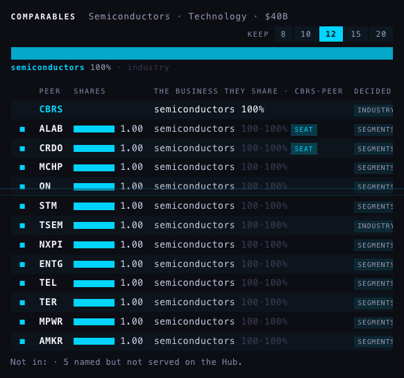

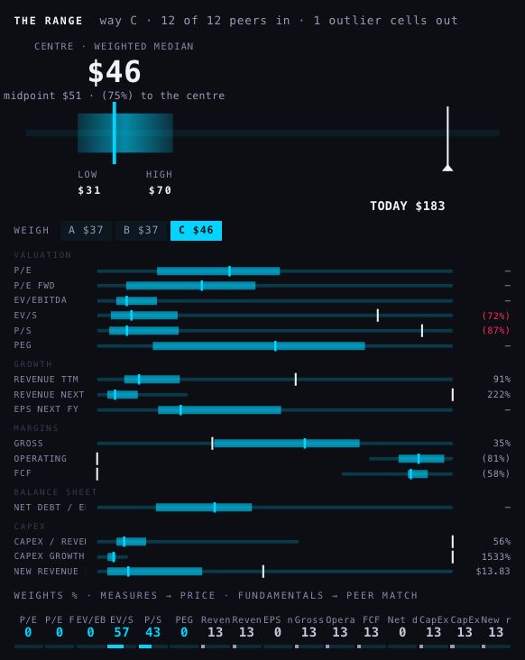

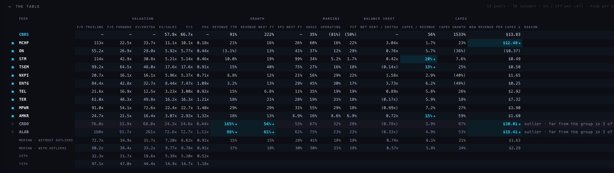
| CBRS · peers' median | before (C5b) | with outliers | without outliers | CBRS's price at that median: before → with → without |
|---|---|---|---|---|
| P/E | 80.2× 12 peers | 80.2× 12 | 72.7× 10 | CBRS cannot be priced on this row |
| P/E forward | 38.4× 12 peers | 38.4× 12 | 34.9× 10 | CBRS cannot be priced on this row |
| EV/EBITDA | 33.2× 12 peers | 33.2× 12 | 31.7× 10 | CBRS cannot be priced on this row |
| EV/sales | 9.8× 12 peers | 9.8× 12 | 7.2× 10 | $50.66 → $50.66 → $43.63 |
| P/S | 8.8× 12 peers | 8.8× 12 | 6.6× 10 | $24.06 → $24.06 → $18.14 |
| PEG | 0.9× 11 peers | 0.9× 12 | 0.9× 10 | CBRS cannot be priced on this row |
| THE CENTRE (way C) | $46.20 | $46.20 | $40.17 | low $27.71 · high $61.08 without outliers |
| CBRS's peer | verdict | the columns that marked it |
|---|---|---|
| CRDO | OUTLIER far from the group in 3 of 16 columns | Revenue TTM 165% (group 17%, 10.1 spreads above) New revenue per CapEx $ $30.01 (group $2.29, 9.8 spreads above) Revenue next FY 54% (group 18%, 4.5 spreads above) |
| ALAB | OUTLIER far from the group in 3 of 16 columns | Revenue TTM 98% (group 17%, 5.5 spreads above) Revenue next FY 61% (group 18%, 5.4 spreads above) New revenue per CapEx $ $15.41 (group $2.29, 4.6 spreads above) |
| MCHP | marked, still counted far from the group in 1 of 16 columns | New revenue per CapEx $ $12.49 (group $2.29, 3.6 spreads above) |
| STM | marked, still counted far from the group in 1 of 16 columns | CapEx / revenue 20% (group 6%, 5.6 spreads above) |
| TSEM | marked, still counted far from the group in 1 of 16 columns | CapEx / revenue 33% (group 6%, 10.7 spreads above) |
| AMKR | marked, still counted far from the group in 1 of 16 columns | CapEx / revenue 15% (group 6%, 3.7 spreads above) |
On a phone 390 wide
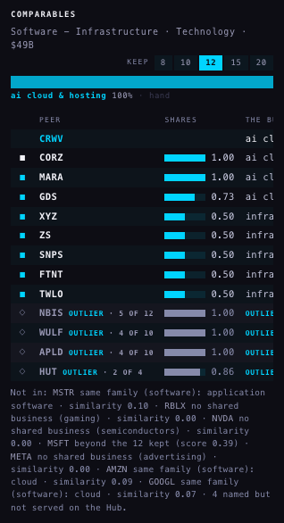
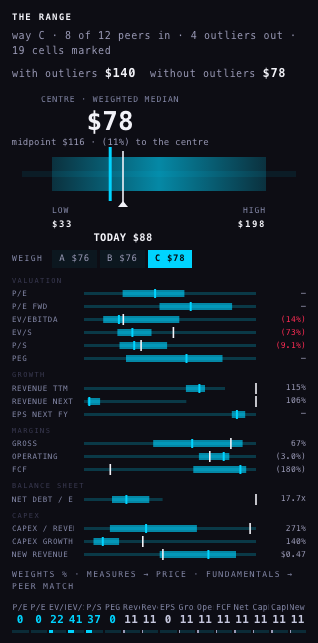
What if only the six multiples were counted a what-if, not built into the tab
| company | as built: all 16 columns → centre | the six multiples only → centre |
|---|---|---|
| MU | SNDK, NVDA → $6,194 | none → $4,456 |
| NVDA | ARM → $386 | ARM (EV/S 71.31, P/E 312.57, P/S 71.81) → $386 |
| CRWV | NBIS, WULF, APLD, HUT → $77.97 | none → $140 |
| CBRS | CRDO, ALAB → $40.17 | none → $46.20 |
PAGE SPECS
The rule, in two sentences. In every column of the comps table, each peer's distance from the column's median is measured in units of the column's typical spread (the median absolute deviation; the six multiples on a log scale, so a 300× P/E is “ten times a 30×”, not “270 further”), and a cell more than 3.5 such units away is marked. A peer marked in 3 or more columns — or in at least 40% of the columns it has figures for, and at least two — is an outlier: greyed at the bottom with its count, left out of every median and of the implied price, never deleted, and one click keeps it in; a single mark is only a coloured cell and the peer still counts.
What changed against C5b. C5b dropped a single cell from a single measure at 3 spreads (ARM's P/E out of the P/E median, ARM still in everywhere else). C6 judges the whole peer across all sixteen columns: a peer is in for every measure or out for every measure. The hollow circles at the edge of the field bars are gone with the single-cell rule; one wild cell now stays inside its bar.
What the four names show (the weird, funky stuff).
- Nearly every outlier is caught by growth and capex, not by multiples. Of the nine outliers above, only ARM (in NVDA's set) is marked on a multiple. Three of the sixteen columns say almost the same thing — revenue growth trailing, revenue growth next year, new revenue per capex dollar — so one fact (“this company is growing very fast”) easily earns three marks.
- CRWV: the rule removes the four companies most like CoreWeave (NBIS, WULF, APLD, HUT — the other AI-compute builders: revenue growing or expected to grow 94–460%, and for three of them capex at 4–10 times revenue), because the group's median is set by ZS, SNPS, FTNT and TWLO. The centre falls from $140 to $78. The outlier rule cannot repair a set that is mostly the wrong business; it makes it worse.
- MU: the centre moves further from the price ($4,456 → $6,194 against $1,064 today). SanDisk and Nvidia carried the lowest multiples in the set (SNDK 8× forward earnings); removing them for fast growth raises every median. Micron itself, measured against these peers, would be marked on at least revenue growth (256%) and capex (28% of revenue).
- HUT is out on 2 of 4 columns — it has figures in only four judged columns, and one of the two marks is a trailing revenue growth of (102)%, which looks like a data fault rather than a business fact.
- At 3.5 spreads the cells C5b used to drop at 3 (SNDK's 8× forward P/E and 0.14 PEG, ARM's 71× sales in MU's set) fall just inside and are not marked.
Where each number comes from. The four sets are the C5 business-first sets (not K1's own-business rule, which was dropped — so MU's peers here are the chip names, not WDC and STX). Prices: the chart API, 5 Oct after the close. Figures: the Hub's fundamentals, estimates and balance tables, read with the Hub's public key, with C5b's one-currency rule. “Before” is the C5b code on the same figures. The pictures are headless (never a visible window) at 1680 and 390 wide, the Hub served from the branch under its own hostname; every write the page attempted was caught and answered locally (2 per run: the keep click and its undo — nothing reached the database).
What could be wrong. (1) Columns are counted as if independent; they are not (growth × 3, P/S with EV/sales, the two P/Es). (2) The group is measured once: if a third of a set is wild, the median itself drifts toward them. (3) A column needs five peers to judge anyone; sparse columns (P/E where half the peers lose money) judge few. (4) The company itself is not tested against its peers. (5) The what-if table changes only which columns are counted; thresholds are the same.
Not done. Nothing is deployed and index.html is untouched (the Hub's COMPS tab file changed on this branch only). No table was written. K1's own-business rule was not carried. The field bars do not yet pin a single wild cell to the edge of its bar (C5b did, for the cells it dropped). The 390 pictures cover the set and the range; the sixteen-column table on a phone scrolls sideways as before.
Tests. tests/comps-c6.test.mjs, 11 tests: the per-column distance, the log scale, thin and tied columns, a single extreme column against many moderate ones, the 40% road, NVDA/ARM, the four names, the keep click, C5 unchanged, the tab's words. Hub suite 1,884 tests, 7 failures — the same seven as the untouched release (Indicator Lab checkpoint, age function, readiness, saved review charts, xfeed-publish, MONTH, REGIME).